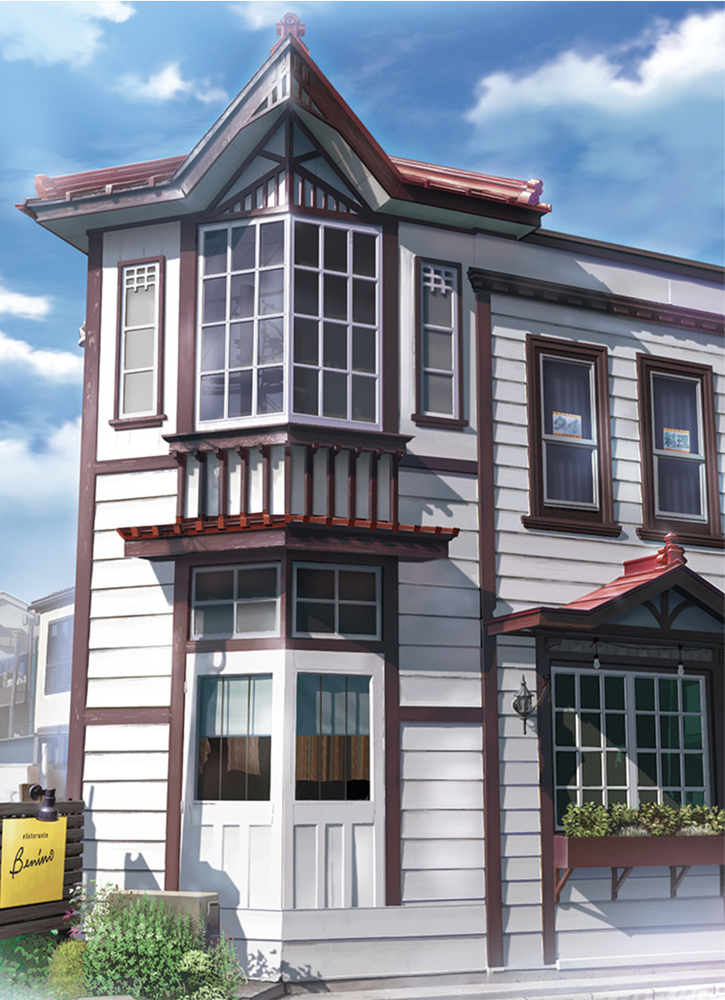
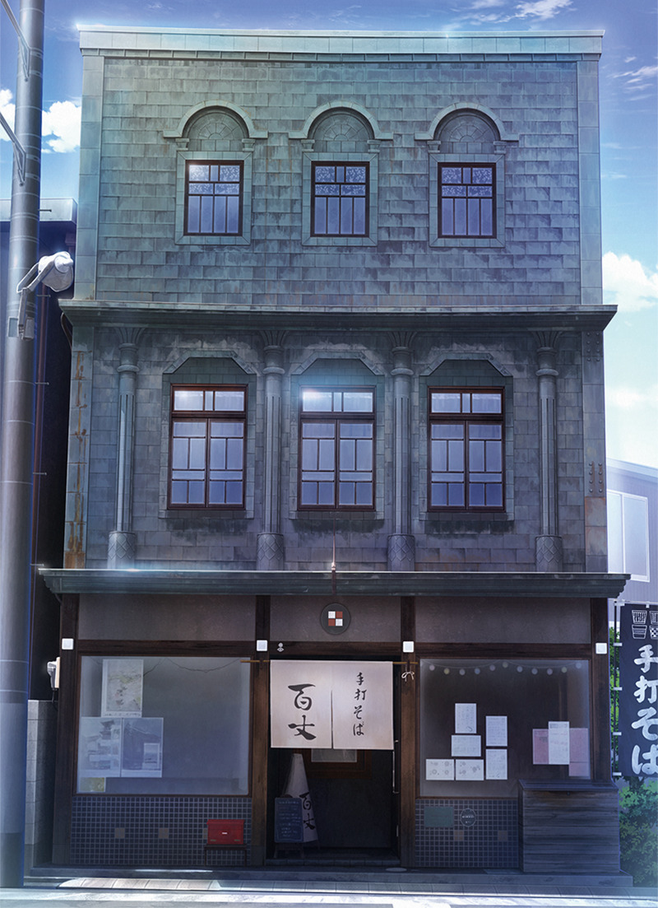
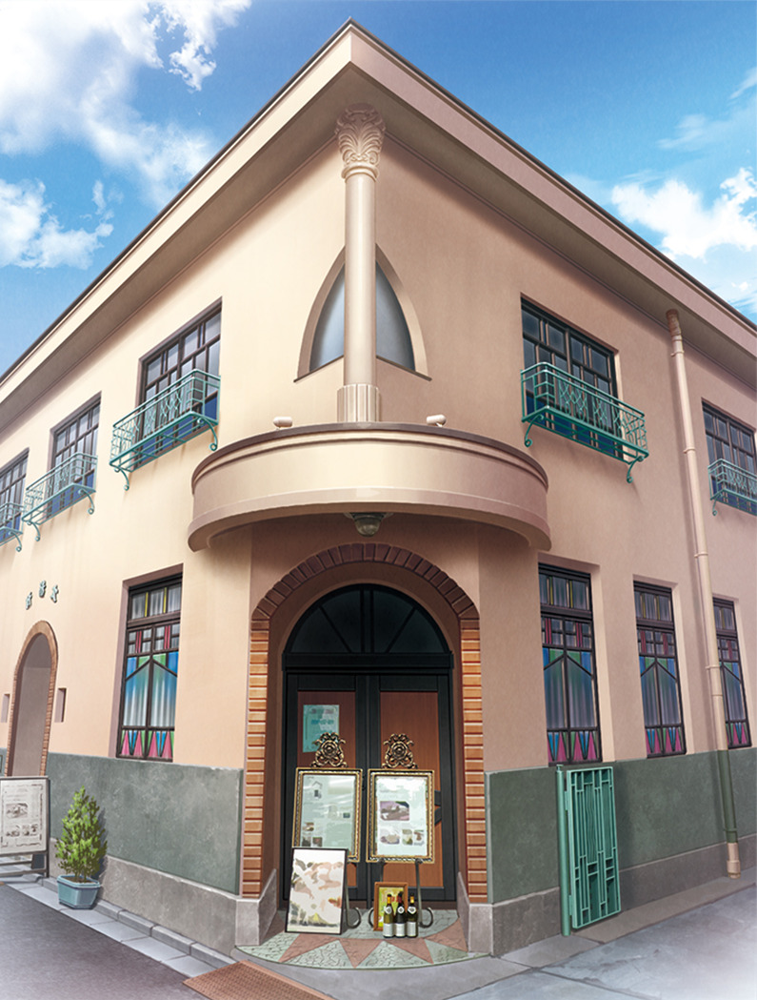

Префектура Сайтама · Кавагоэ · архитектура
Кавагоэ в рисунках аниме: здания эпох Тайсё и Сёва в «Маленьком Эдо»

Кавагоэ знают по купеческим складам и часовой башне. Но в этом городе есть и другая старина: здания эпох Тайсё и Сёва, которые одна книга показала глазами художников аниме.
Город
Не только склады
Город Кавагоэ в префектуре Сайтама называют «Маленьким Эдо»: здесь сохранились улицы, похожие на старую столицу. Каждый год сюда приезжает множество туристов. Главные символы города известны всем: часовая башня «Токи-но канэ» и купеческие дома-склады курадзукури.
Однако в Кавагоэ много и зданий другого рода, которые в Японии относят к архитектуре нового времени. Это модные для своей эпохи дома периодов Тайсё (1912–1926) и Сёва (1926–1989), и по городу их разбросано немало.

Книга
Архитектура глазами художников аниме
Эти здания собрала книга «Здания Кавагоэ. Архитектура нового времени». Её выпустило «Сэмба сёбо», издательство из одного человека: его основатель сам придумывает книги, собирает материал, редактирует, верстает, вычитывает, продаёт и ведёт дела. Название он взял у квартала Сэмба-мати в Кавагоэ, где прожил около 30 лет.
Основатель родом из Кавагоэ. Поработав в издательстве, он искал способ рассказать о родном городе и остановился на его зданиях нового времени. Обычно архитектуру показывают на фотографиях, акварелях или рисунках пером. Здесь всё иначе: иллюстрации сделала студия, которая много лет рисует только фоны для аниме, в том числе для сериала «Урусэй Яцура». Рисунки намеренно сделаны в манере аниме, и от этого здания словно ждут, что в них вот-вот начнётся какая-то история.

Кроме рисунков в книге рассказано, почему и как появилось каждое здание и что с ним было потом, а также в каких произведениях оно уже появлялось. Книгу задумали как спутника для прогулки по Кавагоэ: с ней можно разглядывать дома, бродить по городу или искать места, знакомые по экрану. В 2021 году она стоила 2200 иен с налогом.
Книга «Здания Кавагоэ. Архитектура нового времени»
- Цены / Вход
- 2200 иен с налогом (2021)
- Сайт
- semba-shobo.com
Где увидеть
Три здания из книги
Ristorante Benino занимает белый двухэтажный дом с эркером под острым фронтоном и красной отделкой крыши. «Тэути соба Хякудзё» работает в узком трёхэтажном доме с тёмным фасадом и арочными окнами под самой крышей. «Модан-тэй Тайёкэн» стоит на углу в розовом здании с круглым балконом над входом. Лапшичная и ресторан находятся рядом, в квартале Мото-мати, недалеко от остановки автобуса «Сиякусё-маэ» (у мэрии).
Ristorante Benino
- Адрес
- префектура Сайтама, Кавагоэ, Та-мати, 5-1
- Как добраться
- несколько минут пешком от станции Кавагоэси
«Тэути соба Хякудзё»
- Адрес
- префектура Сайтама, Кавагоэ, Мото-мати, 1-1-15
- Как добраться
- от станции Хон-Кавагоэ автобусом до остановки «Сиякусё-маэ»
«Модан-тэй Тайёкэн»
- Адрес
- префектура Сайтама, Кавагоэ, Мото-мати, 1-1-23